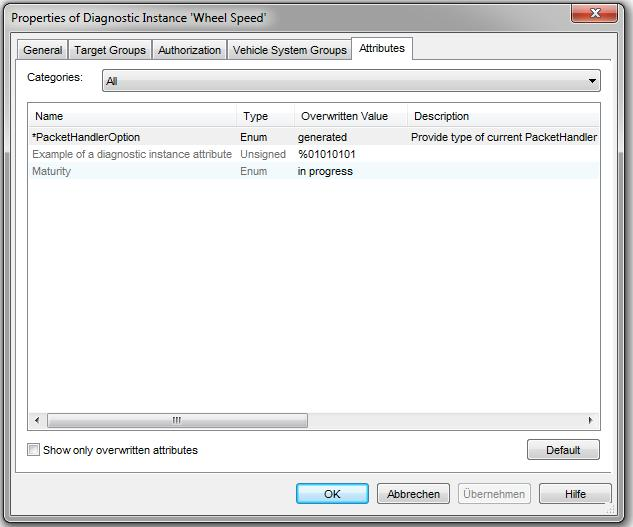

See also the Attribute Definition and the Attributes Feature.

Attribute Values of a Diagnostic Instance
The "Categories" combobox provides a filter: if you select a category, only attributes assigned to that category are shown in the list below.
The combobox entry "All" shows all attributes.
The "Name" column in the attributes list shows the attribute name.
A "*" before the name indicates that the value of that attribute has been overwritten (see chapter below)
Indicates the type of the attribute [ATTR-R020].
Shows the overriding value, i.e. the individual value defined at the given object for the attribute.
To modify the value, select the cell and press F2 or again click into the cell.
Shows the description of the attribute (from the attribute definition).
If you check this checkbox, the list will contain only attributes that have an overwritten value (i.e. a "*" to the left of the name).
The [Default] button lets you remove the overriding values from the selected attributes, so that their default takes effect again.
The button is insensitive if none of the selected attributes is overridden.
R020.1: adapt the attribute property page to enforce the right format, as in the implementation for revision items (CDS-1454).
R021.0: after the string format has been changed, when the user edits an existing string, do not show the invalid string but show an empty value (both in table and properties dialog).
R022.1 Do not display string format difference in difference view.